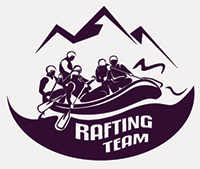

Overview
Purpose
The purpose of Rafting Team Adventures is to help families, friends, and adventure seekers discover exciting and safe whitewater rafting trips. The website will provide information about our rafting trips, prices, safety rules, locations, and how customers can make reservations. Our goal is to give visitors an easy way to choose a rafting adventure and feel prepared and excited before their trip.
Audience
Our audience includes teenagers, adults, families, tourists, and groups of friends who enjoy outdoor activities and want to try whitewater rafting. Some customers may be beginners, while others may have rafting experience. They want a fun, safe, and affordable adventure. Most visitors will use the website on a phone, tablet, or computer to look at trip options, prices, safety information, and reservation details.
Branding
Website Logo

Style Guide
Color Palette
| Primary | Secondary | Accent 1 | Accent 2 |
|---|---|---|---|
Typography
Heading Font: Oswald
Paragraph Font: Satisfy
Normal paragraph example
The best Whitewater Rafting in Colorado, White Water Rafting Company offers rafting on the Colorado and Roaring Fork Rivers in Glenwood Springs. Since 1974, we have been family owned and operated, rafting the Shoshone section of Glenwood Canyon and beyond.
Colored paragraph example
Trips vary from mild and great for families, to trips exclusively for physically fit and experienced rafters. No matter what type of river adventures you are seeking, White Water Rafting Company can make it happen for you.
Navigation with Hover
Site Map
Wireframes
Home